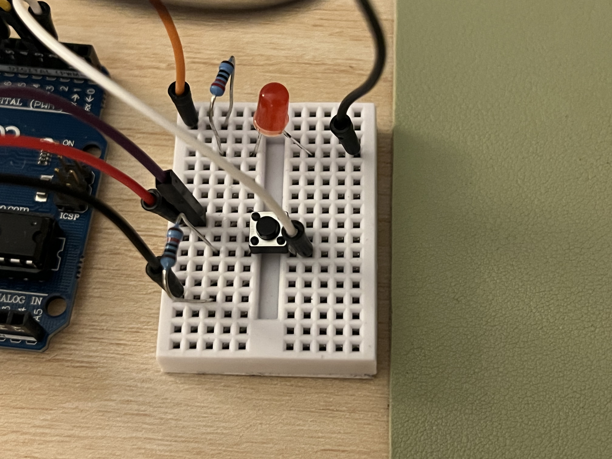

Darby's A6 Web I/O Assignment
Schematic
This is a schematic of the circuit that I built for this project. The joystick is connected to the A0 and A1 analog in pins.
I decided to use a 220 Ohm resistor for the LED because I calculated that a 150 Ohm resistance was needed for a red LED, so I used a 220 Ohm resistor to provide a safe current flow.
I also determined that a 10 Kili Ohm resistor was needed for the button because I used a pull-down configureation for the
button and 10K Ohm would provide a safe current flow when the button is pressed.
Circuit


This is a picture of the circuit that I built on a breadboard.
I connected the LED to pin 5 so that I could control its brightness and I connected the button to pin 2.
I connected the joystick to the A0 and A1 analog in pins so that I could read the x and y position of the joystick.
Ardino Code
The following code was written for this assignment using the Arduino IDE:
// initialize button pin
const int BUTTON_PIN = 2;
// Initialize a variable for the analog input pin for x values
int x = A0;
// Initialize a variable for the analog input pin for y values
int y = A1;
// Initialize a variable for the joystick x values
int xVal = 0;
// Initialize a variable for the joystick y values
int yVal = 0;
// Initialize variable for keeping track of the button status:
int currBtnState = 0;
// Initialize variable for keeping track of the previous button status:
int prevBtnState = currBtnState;
// Initialize variable for LED pin
int led = 5;
void setup() {
// start serial communication at 9600 baud rate
Serial.begin(9600);
// set the button pin as an input
pinMode(BUTTON_PIN, INPUT);
// set the LED pin as output:
pinMode(led, OUTPUT);
}
void loop() {
// Read the state of the push button value:
currBtnState = digitalRead(BUTTON_PIN);
// Check if the push button is pressed:
Serial.print(currBtnState);
// Send a comma between each value
Serial.print(",");
// Read in the x value from the joystick
xVal = analogRead(x);
// Read in the y value from the joystick
yVal = analogRead(y);
// Print the x value to the serial monitor
Serial.print(xVal);
// Send a comma between each value
Serial.print(",");
// Print the y value to the serial monitor
Serial.println(yVal);
// Check if there is data to be read:
if (Serial.available() > 0) {
// read from the port, constrain to avoid outliers:
int inByte = map(Serial.read(), 0, 510, 0, 255);
// write a brightness to the LED based on what was received:
analogWrite(led, inByte);
}
// reset the previous stored state of the button to the current state:
prevBtnState = currBtnState;
// wait 200 miliseconds so that multiple button pushses dont happen back to back
delay(100);
}
P5.JS Code
The following code was written for this assignment using p5.js:
Video
You can access a video of my project here: https://www.youtube.com/watch?v=fAEzNgHhOuY
If I were to complete this assignment again, I would have powered the entire LED strip using the 12V power supply rather than 45 branches.
Questions
Read the text on your mosfet to see which one you have. For your mosfet, what is the absolute maximum amount of current between pins 2 and 3?
I have the IRLZ44N transitor. The absolute maximum amount of current between pins 2 and 3 for the IRLZ44N MOSFET transistor is 47A. This can be seen on the datasheet
under the "Absolute Maximum Ratings" section, under "Continuous Drain Current, Vgs at 10V".
2: Draw a schematic for a circuit with using at least your arduino, a DC motor, and a flyback diode.
Find parts with datasheets you could use for each of these schematic components.
3: Here is the datasheet for the L293D chip: https://www.ti.com/product/L293D.
Draw a schematic using at least your arduino, this chip, and two motors. Write (pseudo) code that shows how you would move the motors both forward,
both back, then one forward one back, and one back then forward.
Schematic:
Pseudo code:
void setup() {
pinMode(7, OUTPUT); // Motor 1 enable pin 1 on L293D
pinMode(6, OUTPUT); // Motor 1 direction pin 2 on L293D
pinMode(5, OUTPUT); // Motor 1 direction pin 7 on L293D
pinMode(11, OUTPUT); // Motor 2 enable pin 9 on L293D
pinMode(10, OUTPUT); // Motor 2 direction pin 10 on L293D
pinMode(9, OUTPUT); // Motor 2 direction pin 15 on L293D
DigitalWrite(7,HIGH);
DigitalWrite(11,HIGH);
}
void loop() {
digitalWrite(6,HIGH);
digitalWrite(5,LOW);
digitalWrite(10,HIGH);
digitalWrite(9,LOW);
delay(100);
digitalWrite(6,LOW);
digitalWrite(5,HIGH);
digitalWrite(10,LOW);
digitalWrite(9,HIGH);
delay(100);
// forward then back
digitalWrite(6,HIGH);
digitalWrite(5,LOW);
digitalWrite(10,LOW);
digitalWrite(9,HIGH);
delay(100);
// back then forward
digitalWrite(6,LOW);
digitalWrite(5,HIGH);
digitalWrite(10,HIGH);
digitalWrite(9,LOW);
delay(100);
}
Did you use AI tools in completing this assignment? If yes, please provide details on how/when,
as well as a brief reflection. If no, you can either leave this question blank, or provide other information if you'd like.
No, I did not use AI tools in completing this assignment.